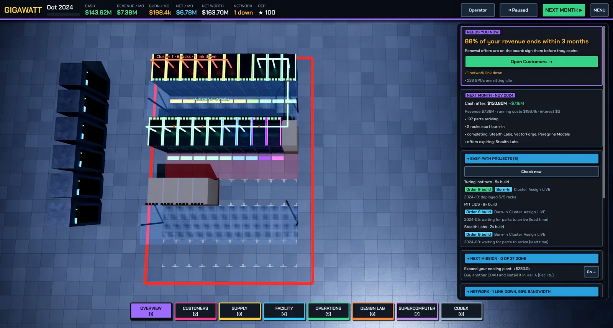
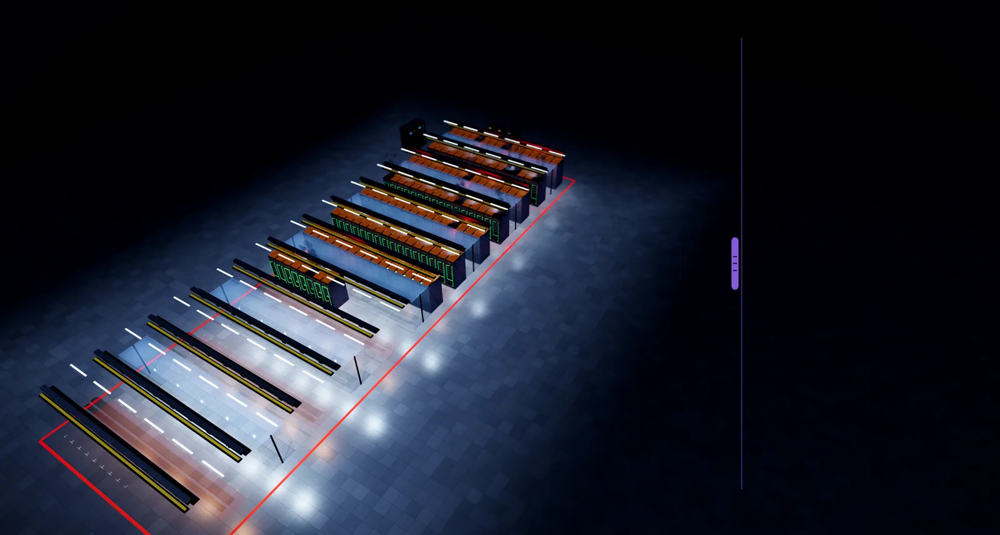

Power and cooling
Transformers, UPS and generators, PUE, CRAH, RDHx, direct-to-chip liquid and chillers — and why heat, not floor space, is what limits your hall.
Every watt a GPU draws turns into a watt of heat inside your hall. The Build screen has two gauges that matter more than anything else: IT load vs your power feed and heat rejection vs installed cooling. If racks draw more than the feed, breakers trip or racks throttle. If heat rejection is below IT load, hardware fails roughly three times more often. Both gauges warn you as you approach the limit.
Transformer / switchgear — the power feed
The transformer steps utility voltage down to what the hall uses and sets the maximum IT load in kW you may draw. It arrives in your warehouse after a lead time and is installed from the Build screen. Plan feed capacity ahead of rack purchases — transformers have lead times measured in months, and a 100 MW campus starts with grid interconnection and transformers ordered years ahead.
UPS, batteries and generators
Grid power blips. Customers sign SLAs at 95–99.5% availability, and a grid dip without protection restarts every training job. The protection chain, all visible in the Outage protection panel:
- UPS — batteries (or flywheels) that ride through dips; needs both inverter capacity and a battery string sized to IT load
- Generator — takes over for long outages; must be sized to at least your IT load
- Transfer switch (ATS/STS) — moves load to the generator automatically
- N+1 — a second generator that can parallel (or an oversized UPS), so any single engine, battery string or chiller can fail with zero customer impact; this is what enterprise and sovereign customers pay for
The panel shows your tier (none / basic / N / N+1), the share of outages you ride through, and exactly which gap is holding you back. Enterprise contracts with SLAs at 98%+ expect this chain before you sign.
PUE — the number on your bill
PUE = total facility power ÷ IT power. A perfect hall would score 1.0; 1.1–1.5 is typical. You pay for the overhead — cooling, conversion losses — on top of IT power every single month, so a lower PUE (efficient cooling, liquid instead of air at density) directly cuts your power bill. Each hall's PUE shows on its Build panel.
The cooling ladder
Cooling classes are set per hall when you build it (air, RDHx, DLC, immersion), and each class has its own equipment:
| Class | Works up to | How |
|---|---|---|
| CRAH (air) | ~20–25 kW per rack | Air handlers push cold air under the floor and pull hot air back |
| Rear-door heat exchanger | ~40 kW per rack | A water coil on the rack's back door cools exhaust before it re-enters the room — no server plumbing |
| DLC (direct-to-chip) | 40 kW and beyond | Coolant flows through cold plates on GPUs/CPUs; a CDU (coolant distribution unit) isolates and pumps the loop |
| Immersion | highest densities | Servers submerged in dielectric fluid |
Air cannot carry away 40+ kW from one rack. GB200 NVL72 racks (~120 kW) are liquid-only: they need a DLC hall, CDUs, and a floor planned for the loop — the same rack format continues with later generations.
Chillers and cooling towers
CRAHs and CDUs don't destroy heat, they move it. Past a certain heat load — or in any liquid-cooled hall — you need a central plant: a chiller makes cold water, and a cooling tower or dry cooler throws the heat to outside air. Chiller trips are a real incident (see Incidents and resilience); N+1 chillers with automatic switchover keep the water cold while one unit is repaired.


Reading the screen
- The gauges turn red when you exceed feed or cooling; the ≥80% zone is your cue to expand
- Hall checks lists validation issues for the selected hall
- Floor space is bought in blocks with a commissioning delay — but space is rarely your real limit
- The Codex → Datacenter 101 view gives a live "do I need this right now?" verdict for every concept on this page, with a Show me where jump
Related: Servers and racks for rack density, Energy and the spot market for what power costs.
Found a mistake or something missing? Edit this page on GitHub or ask in Discussions.